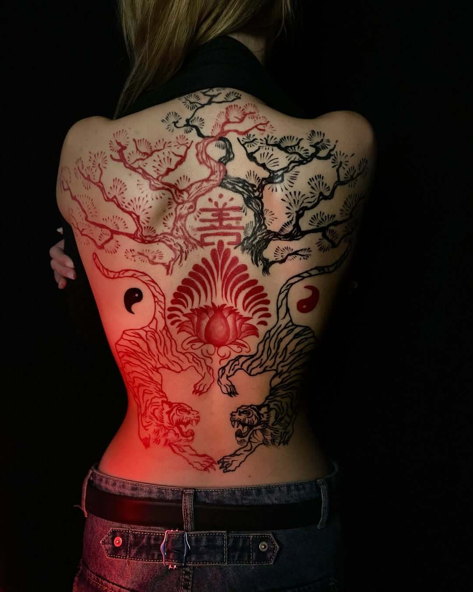
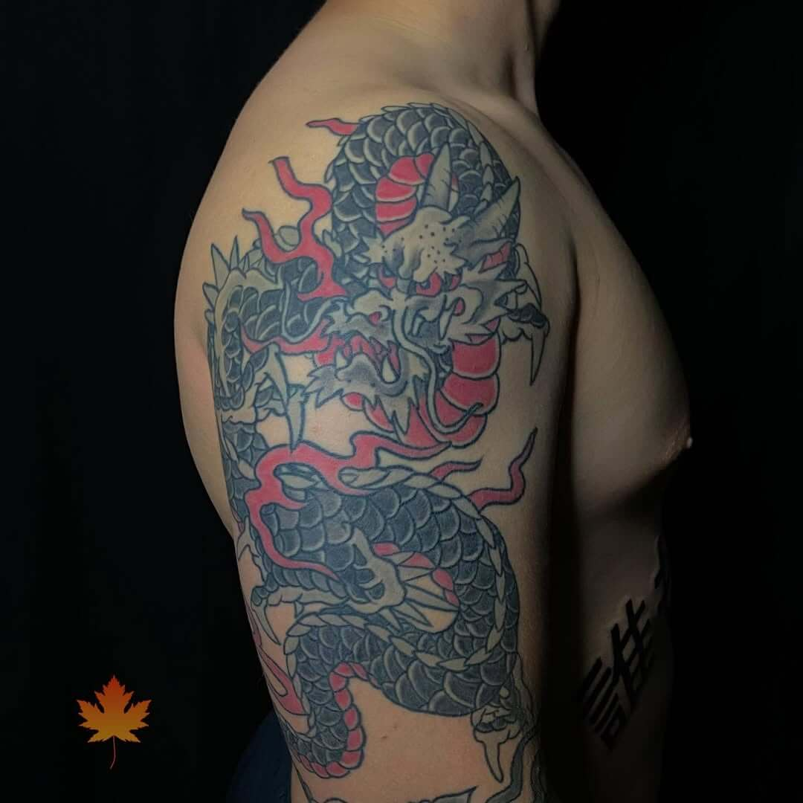

MYKYTA NOVEMBER
ARTIST, TATTOO MASTER
ХУДОЖНИК САМОУЧКА І МОЛОДИЙ ТАЛАНТ У СФЕРІ ТАТУЮВАННЯ.
- — Любить реалізовувати незвичайні ідеї.
- — Віддає перевагу роботі в кольоровому тату.
- — Улюблений стиль - НеоТрадік.
- — Створює по-справжньому індивідуальні ескізи, максимально використовуючи свої творчі здібності та фантазію.
Мінімальна вартість сеансу становить $80.
Наші нещодавні роботи

NEO TRADITIONAL TATTOO
JAPAN TATTO

JAPAN TATTO

OLDSCHOOL TATTO

OLDSCHOOL TATTO
GRAPHICS TATTO